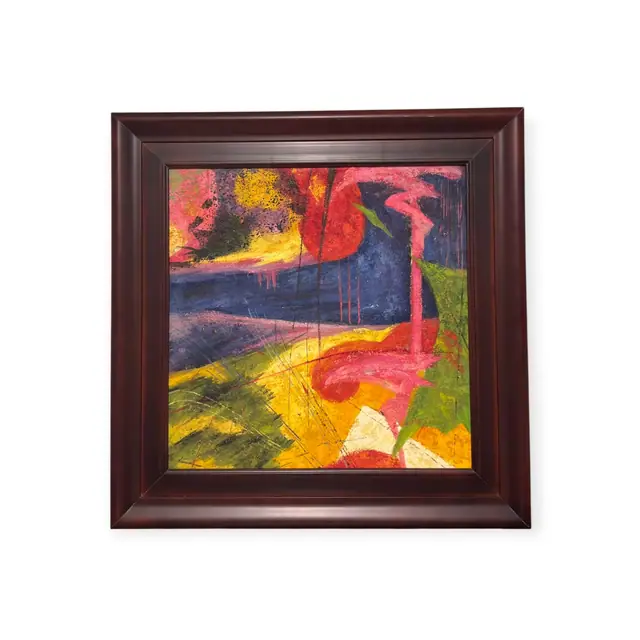
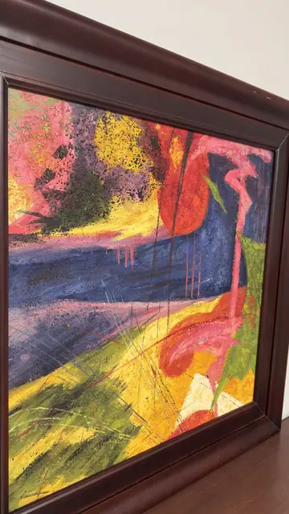
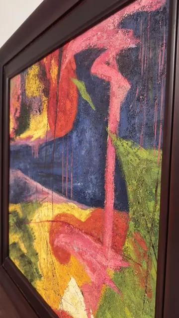
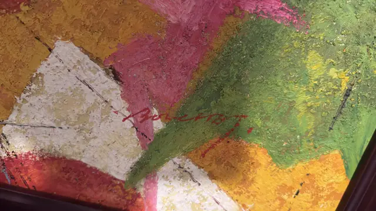

Paintings & Prints
Large Abstract Landscape in Magenta and Chartreuse, Signed, Framed
· late 20th to early 21st century
Price Upon Request




About the Item
A large, almost square abstract that reads loosely as a landscape: a broad indigo-navy band runs across the upper middle like deep water, with runnels of hot pink dripping down through it, while a tall magenta shape rises at the right like a figure or a tree trunk. Below, chartreuse and cadmium yellow fields are scratched and scraped into a bank of grass, and a wedge of bare white breaks through at the bottom centre. The paint is heavily impasted and worked with a knife, with spattered black speckles, sgraffito lines scored back through the crust and dry pigment dragged over the ridges. Colour is loud and saturated - magenta, crimson, chartreuse, gold and violet against the dark blue. It is set in a deep, wide, high-gloss dark mahogany frame with a stepped scoop profile. Medium: acrylic or oil with heavy impasto on canvas. Signed lower centre-left within the image, scratched in red paint. Condition: Thick impasto intact with no visible cracking or loss; some drips and spatter are part of the making. The glossy frame shows minor handling marks and reflections.
Details
- Creation Year:
- late 20th to early 21st century
- Dimensions:
- Height: 40.5 in (102.87 cm)
Width: 40.0 in (101.6 cm)
outside of frame - Medium:
- acrylic or oil with heavy impasto on canvas
- Period:
- 21St
- Condition:
- Offered in the condition shown in the photographs.
- Reference Number:
- VO-156
- Documentation:
- no certificate photographed